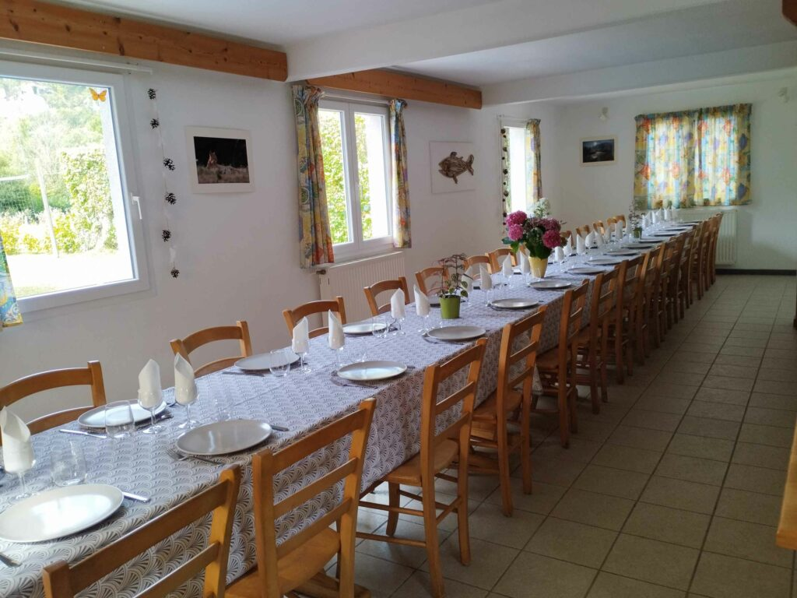

La Tuffière
Manger à La Tuffière : nos tables d'hôtes dans le Doubs
Saveurs du terroir franc-comtois, produits locaux et ambiance conviviale
Gastronomie
Régalez-vous toute l'année à La Tuffière !
Pour vous assurer qualité et saveurs dans vos repas, nous avons sélectionné des producteurs locaux dans la mesure du possible. Le soir, vous dégusterez un repas régional autour de la table commune, mais aussi des légumes de saison et des plats aux saveurs variées et gourmandes.
La table d'hôtes, c'est l'occasion d'échanger les impressions de la journée dans une ambiance conviviale.
Rendez-vous dans votre Gîte de France La Tuffière dans le Doubs en Franche-Comté.
Nous contacter
Nos menus
Découvrez nos cartes
Menu Tradition
Menu Dégustation
« Le partage et l'échange sont primordiaux à La Tuffière »
— Bénédicte & Christian